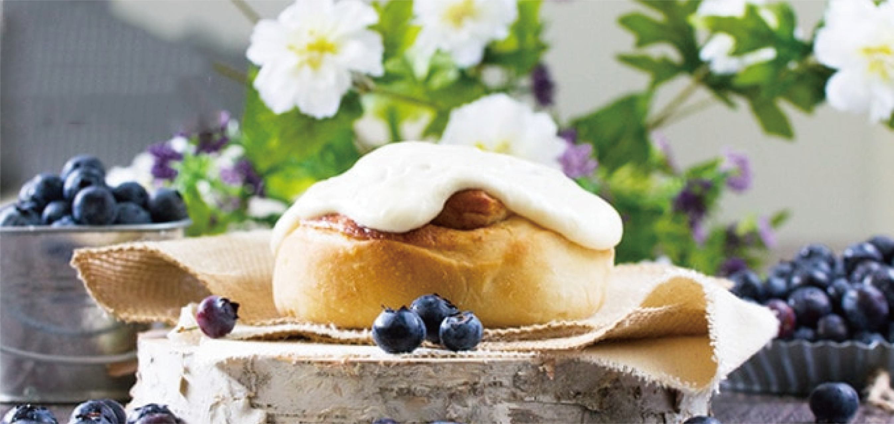

Cart
CartWe are a group of professional pastry chef who are dedicated in making the best quality cinnamon rolls of all sorts of flavors because we believe tasty cinnamon roll can bring incredible joy! Bun Bun Bake Shop has been open since 2002 and has been receiving positive reviews every year. Our tasty cinnamon rolls has also won the “Best Cinnamon Roll of Pennsylvania” for the past three years.
Every day, we deliver fresh and warm cinnamon rolls made from the best ingredients available and topped with the best glazing you can ever imagine. If this sound appealing, come and give it a try. Your will never regret! We are located at:
666 Bun Bun Street,
Pittsburgh, PA 15213